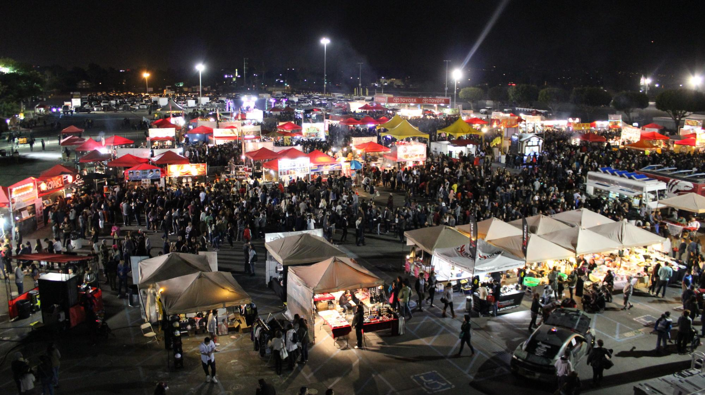

OC Night Market

- Address:
- OC Fair & Event Center, 88 Fair Dr, Costa Mesa, CA 92626
- Hours:
- Open only for select weekends. Check their official Facebook page for event dates and times
- Category:
- Food Fair
- Parking:
- Lots
Description
In collaboration with the 626 Night Market, the OC Night Market is an annual Fair that comes around a few times of the year. With over 200 vendors, the fairgrounds is packed with “food, merchandise, crafts, arts, games, music and entertainment attraction” http://www.ocnightmarket.com/. These events gather over 40,000 customers and creates an area where the community can bond through unique food you wouldn’t find in a normal sit-down restaurant, all while supporting and celebrating local businesses, artists and performers.
Tips and Tricks
- Get there either early or towards the end to avoid long lines - but we suggest going early rather than late since most vendors either close early or sell out fast.
- Be prepared to spend money. On top of the food and goods, there is a parking and entrance fee.
- Although most vendors now accept card, bring cash just in case. There is an ATM located at the entrance.
- The food is said to be the best and most unique part of the fair, but don’t forget to check out the exhibition hall to see the different local artists selling their work - they sometimes do live demonstrations.
- Look at show times to see if there are performances - many UCI dance teams come out to perform so go and support our collegiate community!
- Check out their Facebook page (https://www.facebook.com/OCNightMarket/) for giveaways and videos of the different vendors coming to the event.
Directions from UCI
Driving
- Head towards CA-73 N
- merge onto CA-73 N to Costa Mesa.
- Take exit 17B to merge onto CA-55 S/State Rte 55 S/Costa Mesa Fwy.
- Take exit 4 toward Del Mar Ave/Fair Dr
- Use the right lane to merge onto Newport Blvd.
- Turn right onto Fair Dr.
- Use the right 2 lanes to turn right onto 88 Fair Dr.
Public Transportation
- Head to University Town Center bus stop (next to Chick-fil-A).
take the Orange County Transportation Authority 178 HUNTINGTON BEACH - YORKTOWN & GOLDEN WEST and get off at stop “Fair-Ent 88 OC Fairgrounds”.
- Walk east on Fair Dr until you’ve reached the OC Fair & Event Center.
- You have then arrived at the OC Night Market.
Uber, Lyft and Taxi are also available options.